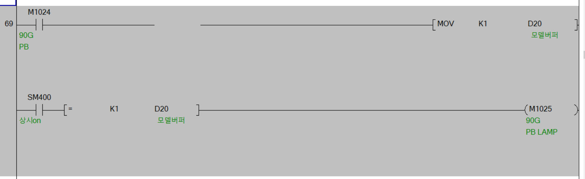
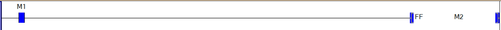
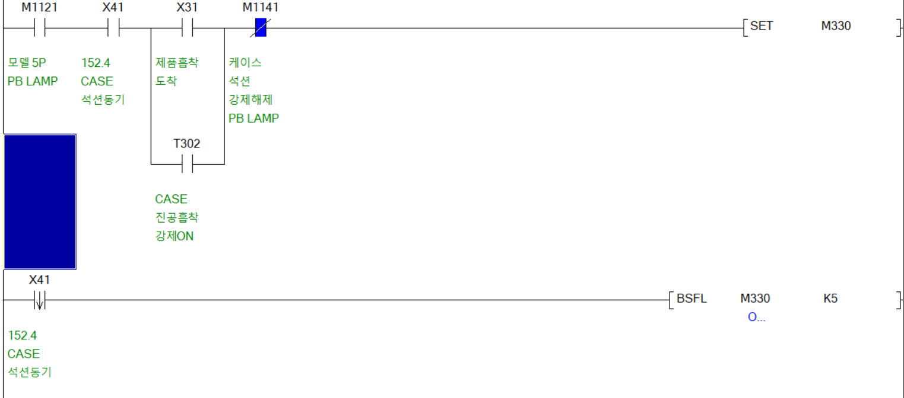
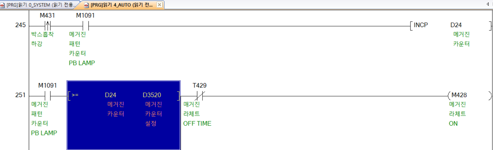

MOV
[MOV (D1) (D2)](D1)의 데이터를 (D2)에 복사하는 명령어.

M1024가 ON이 되면, D20에 K1이 복사되어 D20의 데이터값이 1이 된다.
D20의 데이터 값이 1과 같아지면서 M1025가 ON이 된다.
FF
한번 누르면 ON, 다시 한번 누르면 OFF되는 명령어.

(FF명령어를 사용하지 않은 경우. 회로가 길어지고 복잡해진다.)
BSFL(P),BSFR(P)
[BSFL(P) (D) n](D)로 지정된 디바이스로 부터 n점의 데이터를 1비트씩 왼쪽(오른쪽)으로 시프트 시킵니다.

M330 ~ M334 까지 X41이 ON될때마다 왼쪽으로 시프트 된다.
(0) (0) (0) (0) (1)
M334 M333 M332 M331 M330
(0) (0) (0) (1) (0)
M334 M333 M332 M331 M330
INC(INCP/DINC) / DEC(DECP/DDEC)
[INCP (D)] / [DECP (D)]INC(P) : 실행지령이 ON이 되면 설정된 디바이스 영역 1씩 증가하는 명령어.
DEC(P) : 실행지령이 ON이 되면 설정된 디바이스 영역 1씩 감소하는 명령어.

M1091이 ON되어있고, M431이 한번씩 ON되면, INCP로 인해 D24가 1씩쌓인다.
D24의 쌓인 값이 D3520의 설정한 값과 같거나 커지면 M428번이 ON이 된다.
SM401 - 항상 OFF
SM409 - 0.01초 클록
SM410 - 0.1초 클록
SM411 - 0.2초 클록
SM412 - 1초 클록
SM413 - 2초 클록